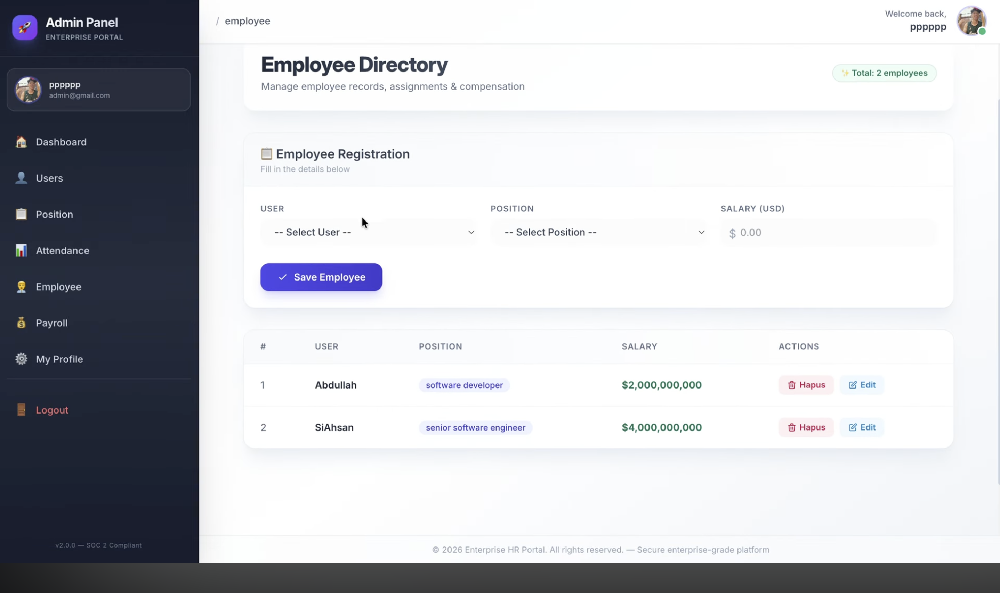

Tech Store E‑Commerce
A responsive e‑commerce interface for tech products. Built to practice modern UI and product layouts.

OneSchool E‑Report
Real‑time reporting for schools. Cut response time from days to hours. Won "Best Web Project" at school.

M‑Ahsan Psychology
A professional website for a psychology practice. Clean, calm, and built with trust in mind.

Payroll Management
Employee management system with attendance tracking and automated salary calculation.

E‑Book Platform
Digital library with user authentication, book catalog, and borrowing system.

Prime Edge Digital
Corporate website for a digital agency. Helped increase client leads by 40% in 3 months.